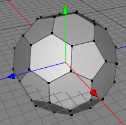
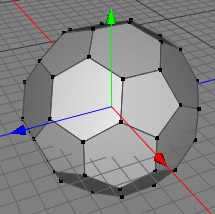

Fill Hole Tool
The fill hole polygon tool belongs to the family of tools which can be used to create new polygons. You could also use the create polygon tool to fill a hole by hand but the fill hole tool saves you a lot of time because you just have to click on one point on hole border. Cheetah3D will do the rest!
Modes
The fill hole polygon tool is available in point, edge and polygon mode and can only be applied on raw polygon objects.
Let's assume that you already have a raw polygon object which contains a hole (as in the left image below). To create a polygon which fills up the hole, just select the fill hole tool and click on one point on the hole's border. Cheetah3D will now automatically detect the rest of the hole border and will fill up the hole with a polygon (as in the right image).
 

Keys
- none
Properties
- none